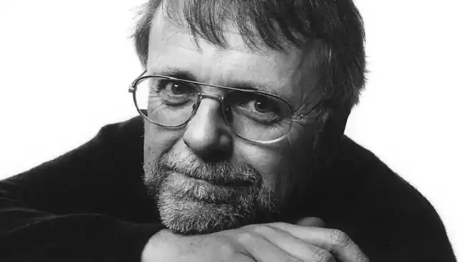

Гаґеруп Клаус (норв. Klaus Hagerup; нар. 5 березня 1946, Осло, Норвегія) — норвезький письменник, актор, режисер. В Україні відомий як автор серії дитячих книжок про Маркуса (з норвезької переклала Галина Кирпа).
Народився Клаус Гаґеруп 5 березня 1946 у Осло. Його батько — Андерс Гаґеруп (1904-1979) був вченим а мати видатна норвезька письменниця Інґер Гаґеруп (1905-1985). Старший брат — Гельґе Гаґеруп (21 квітня 1933 — 12 серпень 2008) був норвезьким драматургом, поетом та прозаїком. У дитинстві мріяв стати олімпійським чемпіоном із метання списів.
У молоді роки брав активну участь у лівому русі. Був одни з лідерів Соціалістичної народної партії Норвегії. Після закінчення школи один рік навчався у театральній школі в Девоні, Англія. Потім чотири роки навчався у Національній театральній академії. Після закінчення академії працював, з 1968 по 1969 рік, актором у театрі в Бергені на Національній сцені. З 1969 по 1971 рік працював у Норвезькому національному театрі. Потім, у 1971-1973 роках, працював у театрі Галоґаланд. Дебют на літературній ниві відбувся у 1969 році зі збіркою віршів "Як я думаю про тебе" (норв. Slik tenker jeg på dere). У 1988 році Клаус Гаґеруп написав біографічну книгу "Все так близько до мене" (норв. Alt ер să nær Мег) про свою відому матір Інґер Гаґеруп. Клаус Гаґеруп одружився 28 вересня 1973 року з Брітт Ірен "Біббі" Борресен, дочкою дочки дизайнера Карла Рунара Борресена. У нього є дві доньки, також письменниці, Ганна та Гільда. Книги українською: Клаус Гаґеруп. "Маркус і Діана" (2006; з норв. переклала Галина Кирпа); Клаус Гаґеруп. "Маркус і дівчата" (2006; з норв. переклала Галина Кирпа); Клаус Гаґеруп, Ганна Гаґеруп. "У страху великі очі" (2009; з норв. переклала Галина Кирпа); Клаус Гаґеруп. "Маркус і велика футбольна любов" (2011; з норв. переклала Галина Кирпа); Клаус Гаґеруп. "Золота вежа" (2011; з норв. переклала Галина Кирпа); Клаус Гаґеруп. "Маркус і велика футбольна любов" (2012; з норв. переклала Галина Кирпа).